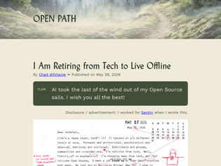
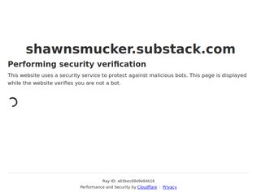
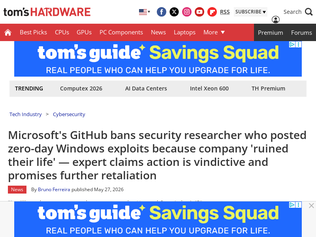
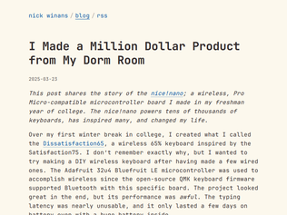
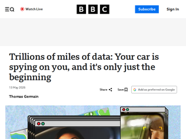
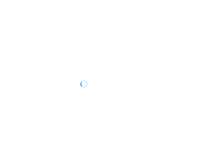
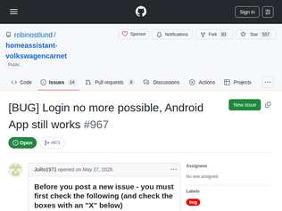

"The article doesn't seem to take his train of thought quite far enough.If AI suddenly makes it possible for a law firm to be run with a skeleton crew, then what's stopping all those people you fired from starting new law companies, where AI also does most of the work, and competing with you for the same market?And ultimately, if AI gets to be so good that it can competently do a lawyer's job, what reason do big law firms even have to exist? Who is going to hire them if they can just hire AI?The companies that are rushing so hard to replace their workers don't realise that AI is eventually going to replace them too.I foresee a wave of entrepreneurship coming. AI will empower more people to provide useful services directly to other people, with less middlemen and menial work, and more direct problem solving."
"Anthropic employees: I believe many of you actually do think your work is for the betterment of humanity. That’s great! If you truly do believe that, it’s time to start demanding your leadership lobby for real, structural solutions to unemployment that leave everyday people with a say in how companies like yours operate. “The market will find new jobs” is not as strong of a historical pattern as “the concentration of power harms the people without it.” It’s true that AI might not in fact automate the majority of labor in the near term. But if it does (and working at Anthropic implies you likely think it could), then work towards a version of that future that’s actually palatable. It would be easy to let your comp upside soften your objective evaluations. Don’t. Think you’re working for a better future? Put your money where your mouth is, and ask your leaders to do the same."
"AI will accelerate the decline in the world’s population. No job, no marriage and no kids will be the norm for most people. For many years to come. Some will say it’s good for the planet and especially for other species of vertebrates. Others will see it as a personal failure to not have any living offspring when they get old.In ancient Greece, Diana was the goddess of hunting, wildlife and personal freedom and Venus was the goddess of love, family and domestic life. The Greeks had stories and plays about how those two goddesses never seemed to get along very well. If you feel like you’re a follower of Diana, then the future will be bright. If you feel like a follower of Venus, then rough times are ahead."

"I have been at it for 20 years now and have started to feel my time is up as wellAs a lot of comments here highlights, the issue is not so much the tech but the politics, constant perf reviews, re-orgs, nonsense BS that is pushed top-down. This industry is taking a toll on you.My advice for anyone reading this that is starting your career: Live simply and save a lot. When I started my career I thought I would love doing this forever. I would never imagine I would get burned out in the long run. I would never imagine I would think about retiring early because tech was so fun to me.The reality is that money and savings give you optionality. It allows you to work without worrying day to day. You never know when the next wave of AI or BS is going to hit. That's when having that optionality is really important.I have seen so many of my peers making very high tech income but also living the American opulent life, spending everything they make to buy multi-million dollar houses in the bay area to impress their friends. Today they have no choice than continue working for another 30 years. Today I can have a simple life and retire almost anywhere in the world.Decide what is important to you. I guarante that buying the multi-million dollar home is not worth the extra 30 years of grinding."
"This whole thing is eye-searingly performative. Whether or not he follows through and goes dark after this, this farewell is just so ridiculous.Claims to have not used the internet or a phone since February, does all communication via USPS, declares that AI and social media make him hate himself... But somehow is continuing to post on Bluesky, continuing to update his blog, continuing to post YouTube videos, continuing to solicit donations on GoFundMe for personal matters. The account that posted this link to HN is brand new and this is the only submission -- hmm...If you are serious about being done with tech and plan to go off-grid, you just go off grid.Need to tie off some loose ends first? Write a paper letter to your IRL inner circle and/or business partners. Get it copied at Kinkos. Call people (use a land line if you need) and talk to them about it.Just this last time (you swear!) you absolutely must announce this at internet scale? Then walk the walk and minimize the tech involved by typing out your farewell in plain text and posting it directly. Y'know, like we did pre-AI, pre-social media. Don't pull out a typewriter, write a sappy "Dear Internet" letter, add a bunch of likely-pre-planned "edits" in red pen, pull out your digital camera, take a photo, transfer it to your laptop, carefully adjust and crop, then finally combine it into a multimedia update that you go out of your way to promote across multiple social media channels. This announcement has obviously been tailored for maximum social media engagement -- supposedly the thing they are making a principled stand in opposition to."
"I just retired after 40 years writing code.The last year or so wasn’t fun - battling with AI, trying to get it do what I wanted.For a long time, I thought I’d do a lot of hobby or open source coding when I retired.I haven’t even tried. I’m not burned out, but find I’ve lost the passion for coding I once had.Is that AI? Or is it me?Maybe as my retirement progresses, I can rekindle that passion, but as of now, I don’t miss tech.Sorry, got to go - my garden needs me :-)"

"I had this moment when we designed shirts for the marathon we ran as a group. Instead of Brainstorming something funny, we just prompted ChatGPT and chose one of the results.I felt lost immediately. All the creativity, the humanity, the endless hours of putting soul into something. GoneFor one hour or so I had some kind of existential crisis. Just because of a funny slogan on a shirt. And sometimes I still feel empty on new projects. You can produce so much things so fast, but if it should be something original - it is hard to get it generated by AI while still feeling that it is something that you came up with"
"I am reminded of Veritasium: What Everyone Gets Wrong About AI and Learning (original video https://www.youtube.com/watch?v=0xS68sl2D70) from a year ago."The world is full of heavy things, and yet most of us aren't ripped."AI is an opportunity. On the one hand, it can be used to let our minds and social lives atrophy. On the other hand, it is an opportunity to help our minds grow. Most people will make the lazy choice. But you can choose to do otherwise.Take, for example, speeches. I do not let AI write my speeches. But my speeches are better for having been critiqued by AI. But the result is still my speech. My thoughts, my ideas, my words, and my meaning. Just improved with rounds of feedback about where it fell flat, where I was likely to lose people, and so on. Feedback that I had to fix.So do not let AI write your speeches. But do use it to push yourself harder."
"This makes me think about that "Dad, how do I?" YouTube channel that made headlines a few years back. People seem to be fine with such a thing existing, they don't seem to be lamenting that people might go to that channel instead of asking their own fathers.Like, apparently Mr. Smucker has a friend who's into fly fishing, and the time to talk to that person. Great! Good for him! If I do not have a friend who's into fly fishing, or if I need an answer quickly, am I...just out of luck?I understand the impulse behind posts like this, and it's important to remember to maintain human connections. (Arguably, once we learn how to do this because we think it's a good in its own right and not because we have to, we'll be better off.) But I just don't like being emotionally browbeaten like this because I have a question that I need an answer for that I don't have the time, money, or access to go get in a different way."
"Can anyone comment on why "big video game" dev pay has lagged "big tech" pay so badly? Ostensibly they are doing remarkably similar engineering problem solving, so why is there such a disparity?"
"> An end to crunchI was unaware of the crunch concept:"In the video game industry, crunch (or crunch culture) is compulsory overtime during the development of a game. Crunch is common in the industry and can lead to work weeks of 65–80 hours for extended periods of time, often uncompensated beyond the normal working hours" -- wikipediaNeedless to say this seems extremely predatory."
"> Together, we are organising around the things we want to change. Starting with: Pay transparency Flexible working An end to crunchThat’s a lot of demands, what next? Competitive salary?! /sarcasmI hope more people will start fighting together for better work conditions. Company owners have money and lawyers so workers must unite to fight them back. I’m saying this as employer."

"I stopped reporting any security bugs I find in web apps because first time I did it I almost got arrested by the police.The second time I did it they contacted my employer directly without even getting back to me saying they were unhappy of me reporting it and wanted to write about it after they fixed the issue.Since then I decided it’s not worth all the hassle and I will let them be and I can also have a peaceful day."
"No idea what's happening here, but the First Rule Of Major Bug Bounty Programs is that everybody involved on the vendor side is actively incentivized to pay out. In many cases, there are people whose internal metrics depend on payouts. Payouts are causes for celebration in these programs. Microsoft is almost certainly[†] not trying to save money by screwing over bounty claimants.This might not be true of small companies (and is a reason why small companies shouldn't run bug bounty programs), but it is definitely true of FAANG/MAG7-scale companies.This doesn't mean these bounty programs err on the side of paying out, or that they won't routinely make decisions that will piss you off. It does however work against claims that they're withholding payouts vindictively.[†] Only hedging because it's been a minute since I've talked to anyone at Microsoft."
"I can’t help but feel Microsoft will regret this.Guy finds zero days and gets no compensation. Instead gets banned.Guy sells zero days elsewhere."

"This is a really cool story. If the author is reading: It would be interesting to read about your experiences with marketing and building support for your products. I know you said a lot of it was luck and timing, but it would be helpful to get your thoughts on which moves you made that best took advantage of that luck and timing.I have dozens of friends who launched group buys for small boards around this price range for different niches that never took off. Some of them even had superior products to the popular offerings, but getting traction is hard."
"The part that resonates with me most is the timing and luck acknowledgement. I built a solo Saas product over the past few months using Calude Code as my development partner. Total cost $600. Launching in 3 days. The tools available now means the barrier to building something has basically collapsed. A weekend in a dorm room in 2020, a few months with AI coding in 2026. Same DNA... find the gap, build the thing and ship it."
"What to notice is that this wasn't really a startup idea at first but it was someone noticing that commercial wireless keyboards had solved a problem that the DIY ecosystem had not; a number of successful products seem to be from bringing an existing capability into a community that need it."

"With cars, networked computers are encroaching on privacy from two sides: the computers inside the car sharing sensor data and the computers outside the car sharing camera data from known points on the road.Older cars may not have cellular data, and some new cars (e.g. the Slate electric car) may be specifically designed without cellular connections or with easily removable chips, but so much can still be inferred from omnipresent roadside surveillance.It's not enough even to have private cars. The solution must be legislation that limits all of: data collected by cars and cameras, data shared among third parties, and placement of cameras without informed, specific, continuing public consent.And every time flock-style cameras "could have" done some good, the surveillance state's cheerleaders will beat their drums and bleat their demands."
"Hyundai received 61 cents per vehicle from Verisk. Honda received 26 cents. California's $12.75M fine against GM, the largest CCPA penalty ever, is less than the $20M GM made from selling the data."
"Every corporation is trying to spy on you. Why wouldn't they? There is no real punishment, and large reward. As long as that is true, superficial regulations around tracking will always be circumvented or hollowed out. We need fundamental change in the way corporations interact with society, and in what is expected of them."

"This is a crushing setback for Blue Origin.I feel for the engineers. They have been the underdogs for so long, but with the recent successful recovery of the New Glenn booster, it finally seemed like they had some bragging rights. Now they're looking at a year minimum before they get back to a regular launch rhythm.The question now is: What went wrong? If they're lucky, it's just a stupid mistake. Maybe an incorrect procedure while loading fuel, or maybe a manufacturing error got past QC.If they are unlucky, the cause will be a mystery, and it will take them months to nail down the root cause.Early in Falcon 9's history, the Amos 6 satellite was stacked on the rocket during a routine static fire and the whole thing blew up. It happened so fast that there were only a few bits of telemetry between "everything normal" and "no signal". For a brief moment SpaceX suspected sabotage by rival ULA. They even requested access to a ULA building to see if a sniper could have taken a shot at the rocket.It turned out to be an exotic failure: liquid oxygen had gotten caught inside a buckled liner in the carbon composite pressure vessels. Friction ignited it, and the entire second stage blew up, destroying the rocket."
"Ouch, losing the rocket is unfortunate, but the damage to the launch infrastructure is going to easily mean over a year of repairs. I hope they're going to take this as an opportunity to update the infrastructure from lessons learned from the flights so far, and to be able to support some of their future ambitions (e.g. Jarvis)."
"The video angle published by the BBC is better, it appears to show one side of the rocket disintegrating and sliding down non-explosively before the large explosion really kicked in. Would hate for this all to be described by a few missing boltshttps://www.bbc.co.uk/news/videos/cvgz0pdg32moedit: the failure appears to start at the bottom, this seems to have damaged the structure enough to cause the sliding to start, then the huge fireball seems to begin with a small flash closer to the top of the rocket"
"I started setting up my workflows using Temporal. It deploys as relatively light weight local app. For an isolated local installation it uses SQLite. It makes the process of dealing with API retries and organizing workflows and tasks really simple. I recommend giving it a try. It is, philosophically, exactly what this article is suggesting, but it adds an incredibly rich and flexible interface for agents to work with. Additionally, the web UI makes it very easy to inspect workflows, review agent execution, etc. Temporal also encodes much higher reliability into your system, almost for free. Distributed and reliable systems are hard, don't reinvent the wheel IMO.If you find yourself wanting things like an easy way to then introspect your SQLite database, figure out what is happening in the workflow, compose individual tasks, make workflows trivially callable, etc, give Temporal a look.Alongside this, I have mostly moved away from files for agents. Markdown and JSON are great, but also feel like traps when building out smaller local apps. LLMs are great at SQLite and you can render anything you want out of it (Markdown, JSON, etc). It saves a lot of tokens when an agent can just query a specific row instead of having to fire up jq or grep through markdown. You get a nice portable self contained data management system that encourages agents to be more disciplined about how they structure their data than a bunch of files. It also continues to scale into MySQL/Postgres if your little local projects start to outgrow or become more formal, you already have schema and discipline around data."
"I don't understand this obsession with SQLite for real, production apps. SQLite is an embedded database, completely unsuitable for managing concurrency. This is what database _servers_ are for, e.g., Postgres, MySQL, etc. Their entire job is to allow you to modify data from multiple processes, on different machines, at the same time.This is a foundational principle of computer science. It seems to me that the "SQLite for everything" crowd is a little bit inexperienced."
"Storage never ended up being the thing we worried about. The painful bits started once a workflow could touch external systems. Replaying state is one thing. Replaying a charge or an email is another. How are you dealing with that?"

"Wasn't the EU Data Act (https://digital-strategy.ec.europa.eu/en/policies/data-act) put in place to exactly prevent these kind of scenarios (Article 4 and 5)?"where the user cannot directly access the data from the connected product or related service, the data holder must make the readily available data and necessary metadata accessible to the user without undue delay, in the same quality as available to the data holder, easily, securely, free of charge, in a structured, commonly used, machine-readable format, and continuously/in real time where relevant and technically feasible."There is even special EU guidance for vehicle data for it: https://digital-strategy.ec.europa.eu/en/library/guidance-ve..."
"Quite a few other manufacturers have done the same thing. I use a reverse engineered Polestar library to get charging status but I'm in the middle of building a CANBUS sniffer to do the same job because I don't trust they won't do the same thing as this.I don't really understand it, it doesn't seem to offer a huge potential revenue stream and it pisses off the people who are most invested in your product."
"BYD DMCAd my whole repo to connect to their cars... https://github.com/github/dmca/blob/master/2026/05/2026-05-2... It's a shame these car makers are locking down their cars (which are brought for a premium!) and going on a crusade against open source."

The dead economy theory
"The article doesn't seem to take his train of thought quite far enough.If AI suddenly makes it possible for a law firm to be run with a skeleton crew, then what's stopping all those people you fired from starting new law companies, where AI also does most of the work, and competing with you for the same market?And ultimately, if AI gets to be so good that it can competently do a lawyer's job, what reason do big law firms even have to exist? Who is going to hire them if they can just hire AI?The companies that are rushing so hard to replace their workers don't realise that AI is eventually going to replace them too.I foresee a wave of entrepreneurship coming. AI will empower more people to provide useful services directly to other people, with less middlemen and menial work, and more direct problem solving."
"Anthropic employees: I believe many of you actually do think your work is for the betterment of humanity. That’s great! If you truly do believe that, it’s time to start demanding your leadership lobby for real, structural solutions to unemployment that leave everyday people with a say in how companies like yours operate. “The market will find new jobs” is not as strong of a historical pattern as “the concentration of power harms the people without it.” It’s true that AI might not in fact automate the majority of labor in the near term. But if it does (and working at Anthropic implies you likely think it could), then work towards a version of that future that’s actually palatable. It would be easy to let your comp upside soften your objective evaluations. Don’t. Think you’re working for a better future? Put your money where your mouth is, and ask your leaders to do the same."
"AI will accelerate the decline in the world’s population. No job, no marriage and no kids will be the norm for most people. For many years to come. Some will say it’s good for the planet and especially for other species of vertebrates. Others will see it as a personal failure to not have any living offspring when they get old.In ancient Greece, Diana was the goddess of hunting, wildlife and personal freedom and Venus was the goddess of love, family and domestic life. The Greeks had stories and plays about how those two goddesses never seemed to get along very well. If you feel like you’re a follower of Diana, then the future will be bright. If you feel like a follower of Venus, then rough times are ahead."